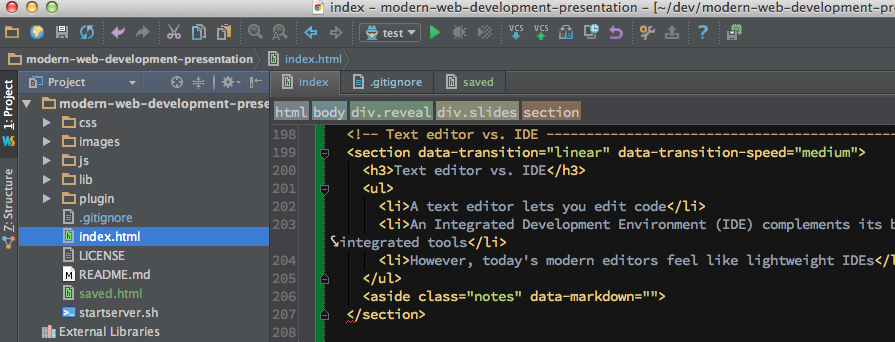
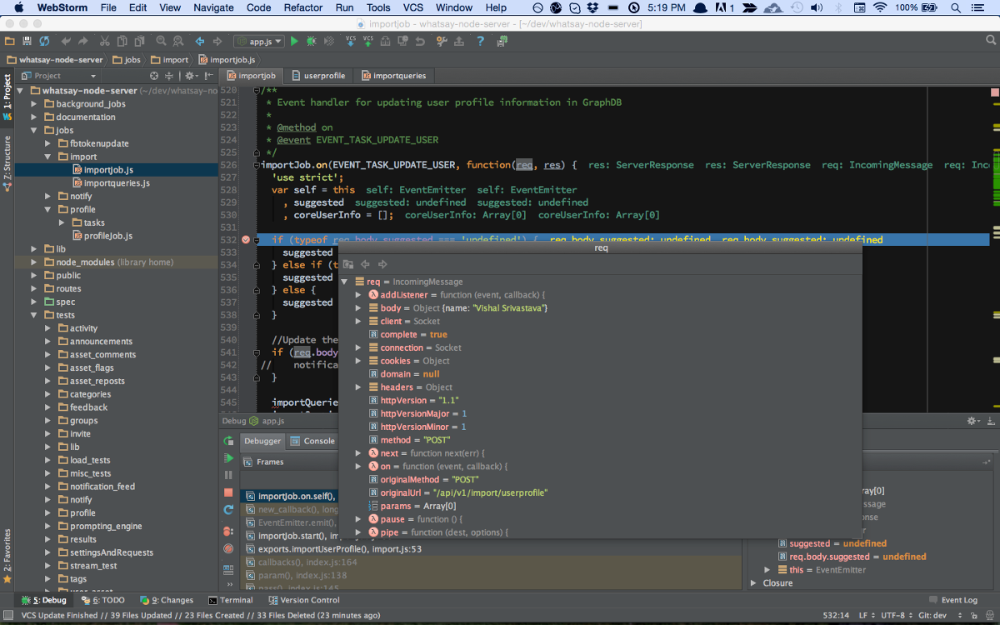

Modern Web Dev
Presented by Carlos Justiniano / @cjus / ver: 0.1.0
---
> Before we begin, by a show of hands, how many people have used the following:
> How many of you are using Bootstrap or Foundation?
> A build tool such as Grunt or Gulp?
> A text editor such as Sublime, Brackets or Atom?
> How about an IDE such as Webstorm, Eclipse or Aptana?
> How many of you use a source control system such as Subversion, Git or Github?
> How about a library such as Backbone, Ember, Knockout or React?
> How about a framework such as AngularJS?
> Ok, how many of us have done unit testing using Jasmine, qUnit or Mocha?
> Any CoffeeScripters in the house?
> Anyone use ES6 features today?
> Hmmm ok, interesting. If you're not familiar with any of terms I've just referenced we'll go over them in this presentation
About this presentation
This is a 30,000 foot view
The goal is to convey topic breath and not depth
We'll cover what modern web devs are doing
Along the way we'll also look at how web tech is finding it's way into non-web areas of technology
Presentation source at: http://github.com/cjus/modern-web-development-presentation
---
> We have a lot to cover so I won't be diving deep into specifics.
> And I may not cover your favorite tool.
> The goal of this presentation is to discuss web development and to consider what modern web devs are doing these days.
> Along the way we'll also look at how web tech is finding it's way into non-web areas of technology
> You may find some of it useful in your own projects.
> In the spirit of modern web development this presentation is built entirely with HTML, CSS and JavaScript and works on your modern web browser and mobile devices.
> This presentation is also open source and available on Github.
> If you find any issue with this presentation drop me an email or better yet, issue a pull request.
What is modern web development?
In short, it's about working smarter and not harder...
And how do we do that?
Leverage existing tools, libraries and frameworks
Embrace best practices
Attend meetups and conferences, or watch them on YouTube
Checkout online training sites such as Lynda.com, Tuts+, CodeSchool and podcasts such as the JavaScript Jabber show
---
> During the past five years there has been an explosive growth of tools.
> New tools are appearing at a dizzying rate.
> If you follow this stuff you know what I mean. It's impossible to really keep up with it all.
> Still, you need to keep an eye on new development and learn just enough to decide whether it's something you should care about.
> The Web development community has really grown up. Not only is it on par with native development, in someways it's leading. There is an order of magnitude more going on in the Web and JavaScript community than in any other language or platform.
> Great ways to stay on top of modern web dev is to embrace tools and best practices. Also engage the community by attending meetups and conferences.
> Don't forget the web is your friend. Checkout the great training sites available.
> Sure some of them charge 20 bucks or more per month. But seriously, it's a small price to invest in your career.
Signs you may not doing modern web development
If you or your team...
build and edit source files using a generic text editor
deploy raw files to webservers without packaging
work in monolithic source files with no real code organization
don't use a library or framework such as: Backbone, Ember, Knockout, React or Angular
don't have a need for source control - zip files work just fine
don't mind manual and repetitive processes as you work on your projects
don't use code linters, style checkers, or beautifiers
don't do any real testing
If that describes your projects - then your dev cycles might feel a bit like this...
If that describes your projects - then your dev cycles might feel a bit like this...
Jane! Stop this crazy thing!
---
> Modern web tools and practices help you take control of your dev cycles and add predictiability to your software releases.
> Let's take a closer look.
How can modern tools and practices help?
By providing you with better tools
Text editor vs. IDE
Any text editor will let you edit code
A text editor designed with web dev in mind will do far more for you
An Integrated Development Environment (IDE) complements its built-in text editor with a host of integrated tools
However, today's modern editors feel like lightweight IDEs
It's not aways easy to decide which one is best for you
---
> Any text editor will let you edit your code.
> However, a text editor designed for web development will let you do much more than just editing.
> At the opposite end of web friendly text editors are IDEs, Integrated Development Environments. These tools typically integrate tools which extend what you can do within a common environment. For some, such as yours truely, this can be a nice advantage. For example, text editors don't typically allow you to debug your code from within the editor - instead you do this outside of the editor. Where as, some IDEs allow you to debug right inside the IDE.
> It is worth noting that many of today's web dev text editors go beyond being basic text editors and also offer a fare amount of tool integration.
> It's definitely not easy to decide which one is best for you. Most devs simply use what the cools kids are using... what ever that might be this week.
> My tip for you is to compare the costs, and features and see which one best fits your needs. For me, webstorm offered the ability to debug node applications and that was and remains an important feature.

This is an IDE called WebStorm
The panel on the left shows a project file structure
Bars at the top contain quick access features and navigation helpers
The panel on the right shows a text view. The red line in front of the closing section tag shows us an error
---
> Here's a screen shot of a web development IDE called WebStorm.
> We can see that our window view consists of panels.
> Each panels serves a distinct purpose.
> At the top of the window we see quick access features and navigation helpers. Notice how we can see that we're looking at the section tag which is inside of a div with a class name of slides which is inside of a div with a class name of reveal. We can also click on those tags to quickly navigate the html document.
> The panel on the left shows a project file structure, while the panel on the right shows our source file.
> Notice the red squiggly line just before the closing section tag. This indicates and error which the IDE found for us. If we hover our mouse cursor over the red line we'd that the cause of the error is a missing a closing aside tag.
> So that's a small example of a tool that can make your job easier.
Debugging a NodeJS app

---
> This is Webstorm again
> In this example I'm debugging a NodeJS app.
> The sever just received an HTTP request which I'm inspecting.
There are lots of great code editors to choose from!
Sublime ($70): http://www.sublimetext.com/
WebStorm ($99): https://www.jetbrains.com/webstorm/
Atom ($0): https://atom.io/
Brackets ($0): http://brackets.io/
and many many more...
---
> This is a list of popular options, but by no means a comprehensive list.
> Both Sublime and Webstorm are commercial, but Atom and Brackets are both free. Don't let the cost fool you. You'd be surprised by what both Atom and Brackets can do.
> One fun fact about Atom and Brackets is that they're actually built using HTML, CSS and JavaScript - which really speaks to the power of modern web technologies.
Improving code quality and reducing errors
Use JSHint: http://jshint.com/
Use js-beautify: https://github.com/beautify-web/js-beautify
Use JSCS (JavaScript Code Style): https://www.npmjs.com/package/jscs
Good news: your (modern) text editor might already support plugins for these tools
---
> One area that makes a huge difference is in code quality. The more error prone your code, the less likely it will meet customer needs.
> Modern devs understand that through code reviews are time consuming and policing code is a thankless job. You just end up pissing off your fellow devs.
> That's why successful devs use tools like jshint or jslint (to spot errors and questionable practices).
> They also use tools like js-beautify to fix code that's not properly formatted and JSCS (The Javascript code style checker) to ensure that code maintains an agreed upon look and feel.
> The good news is that many editors, (especially the four we looked at) include support for these tools.
Use JavaScript libraries and frameworks
JavaScript libraries and frameworks
Lots to choose from
Adds structure to your application
Helps improve maintainability and testing
Offers battle harden code
Dictates how module will be built
---
> There are dozens to choose from. They each provide ways of helping you structure and build web projects.
> For non-trivial projects you really should be using one of them. Which one you **should use** can be a
subject of some heated debate.
> As a project increase in size, more devs end up touching the code. Worse though is that not all of the devs
end up sticking around.
> Quite often the original developers are long gone. This is why choosing a well-known library or framework
(which you didn't invent) can help when it comes time to hire new developers.
> So if you chose to use say Angular, you could hire or train developers to write code consistently with the rest
of the project. New team members then simply need to learn where files are stored and how the project is assembled
in order to get up to speed.
> Best of all they can use books and online training materials to get up to speed. Again, because you didn't
invent the framework there's a greater chance that you'll find a helping hand when you need it.
> JS frameworks help with a concept called "Seperation of concerns" by introducing other concepts such as Models,
Views, Controllers, Service, Routers and other good stuff.
> A key benefit is that they help add structure and help improve maintainability
> Another great benefit is that they provide you well tested and battle harden code which you didn't have to write yourself!
Performance tools
Performance matters!
Optimize for production use: use concatination and minification
They're not just for JavaScript, minifiers exists for HTML, CSS and image files!
---
> Improving site performance can lead to a competitive advantage as customers prefer your site instead of your
competitors.
> In a study, Amazon determined that a page load slowdown of just one second could cost them $1.6 billion in sales
per year.
> Google determined that if its search results were four tenths of a second slower they could lose 8 million
searches per day. The result of which would be millions fewer online ads.
> Clearly, performance matters.
> Optimizing a web application for production use involves intelligently packaging site files so that they take up
less space and load faster. This process involves tools called minifiers which translate file contents into
smaller version by renaming code variable and doing things like removing white space characters.
> Minifiers exists for HTML, CSS and JavaScript.
> There are also image minifiers which change the compression ratio on images to reduce their size without
impacting quality in a noticeable manner.
> If you're not using one of them, check them out!
Performance tools
Testing tools
Build tools
Automation, automation, automation
Bringing it all together
Use JS friendly build tools such as Grunt and Gulp
Both are build systems which include a massive collection of plugins for doing just about anything you need to in the life time of your project.
They can help you do everything we've already discussed and things like pushing your code to cloud services such as Amazon and Heroku and your assets to content delivery networks.
---
> So everything that we've discussed so far fits neatly under the unbrella of a build system such as Grunt or Gulp.
> They each feature a massive library of plugins for things like automtically checking your JavaScript for correctness, running tests scripts, packaging your projects and deploying them to the the cloud and much much more.
> If you're not using these tools now, they should be in your future - set aside some time to get to know them.
Tools of the trade
---
> Lets discuss some of the tools available to web developers
Modern web editors and IDEs
Allow you to do more than just edit files
They include support for plugins which can integrate linters such as JSLint and JSHint to help you spot errors
They allow you to more quickly create HTML and CSS, checkout http://emmet.io/
Some even understand JavaScript syntax to allow you to more quickly navigate your source files
---
> A wikipedia page list over 75 text editors. Modern web editors differ from their older counterparts because by being designed to support developers working on web projects.
> A super popular editor is Sublime. Webstorm is more of an Integrated Development Environment (IDE) than just an editor. Which you use depends on your needs.
> Recent free options include Brackets.io and Atom.
> A really cool point about Brackets and Atom is that they're actually written using HTML, CSS and JavaScript. Talk about eating one's own dog food! I love it.
Debugging in the browser
Yes, you can use your web browser to debug your site.
Modern browsers include a suite of built-in tools
ProTip: Master those tools!
---
> OK, this one might be obvious, but not necessarily for people new to web development
> Modern web browsers have built-in tools which can be used to diagnose a wide varity of web related concerns.
> From the profiling of network calls to the debugging of program state using breakpoints
> If you only casually use those tools, then you may not getting the most out of them! Have a deeper look.
Maintaining your app's dependencies
Modern web apps often include lots of package dependencies
From jQuery to Bootstrap to a libraries such as Ember or React
Tools exist to manage project dependencies. Get to know Bower - a package manager
---
> Modern web devs use dependency package managers such as Bower and NPM to manage their project dependencies.
> You basically list your dependencies in a configuration file so anyone team member can grab the project code and easily install required dependencies
Preparing files for the web
Get to know Grunt or Gulp
I use Gulp in my modern-web-seed project: https://github.com/cjus/modern-web-seed
The plugins I uses: gulp-jshint, gulp-angular-templatecache, gulp-sass, gulp-uglify, gulp-jscs, gulp-jsbeautifier, gulp-usemin, gulp-minify-html, gulp-minify-css, gulp-ng-annotate, gulp-rev, gulp-imagemin, imagemin-pngcrush
$ gulp dist
---
> We talked about Build tools such as Grunt and Gulp earlier.
> I use Grunt at work and Gulp personally. My modern-web-seed project uses the plugins listed. From the names, you can probably guess what each does.
> The really cool thing is that most of those plugins run when I type gulp dist.
> This is serious automation and a major time saver during development
Transpilers
Tools that convert from one language to another
Typically for the purpose of extending or simplifing a language or using language features before they become widely available
Examples: CoffeeScript, SASS/Compass, ES6 to ES5 transpilers
---
> Transpilers are tools that convert from one language to another. Typically for the purpose of extending a language or using language features before they become widely available.
> Examples include:
> CoffeeScript, a transpiler that simplifies JavaScript for Ruby developers terrified of actually learning JavaScript. Ok cheap shot.
> Ex: SASS/Compass, empowers devs with more expressive CSS which gets transpiled to CSS3 during a build processs.
> Ex: ES6 to ES5 transpiler, allows devs to use new ES6 JavaScript features by transpiling them to the ES5 that modern browsers understand.
During the past five years the use of JavaScript has really exploded
---
> If you haven't kept up with JavaScript you'd be surprised what you can do these days
JS front to back and sideways
No longer only in the front-end
JavaScript running in the back-end on NodeJS
Also used to build database queries in CouchDB and CouchBase
JavaScript Object Notation is also used with databases such as Couch, Mongo and Redis
---
> JavaScript on the front end
> JS in the backend with NodeJS
> JS in a database with CouchDB, CouchBase
> JS with MongoDB and Redis
JS in Robotics, checkout Cylon.js and NodeBots
---
> JS is also being used in Robotics, checkout Cylon.js and NodeBots
No really! JavaScript on a chip
Checkout: http://www.espruino.com
---
> The nice thing about these guys is that they offer a large collection of modules from accelerometers to servo motors.
Nodecopters!
http://www.nodecopter.com
https://github.com/felixge/node-ar-drone
---
> Here is an image of a Drone being controlled at NodeCopter Berlin in 2012.
> The project uses a node.js client for controlling Parrot AR Drone quad-copters.
> How cool is that?
> I had a chance to see that live at the 2013 JS.Everywhere conference in San Francisco
In Minority Report, Tom Cruise manipulated holographic screens by waving his hands in mid air
The LeapMotion Controller
Programmable using JavaScript
In fact, the presentation you're watching now can be controlled using a LeapMotion device
Contact
cjus on Twitter and Github
Email: cjus34@gmail.com
About: http://cjus.me